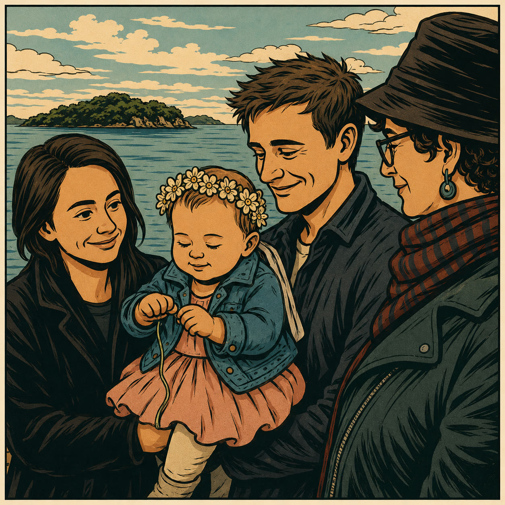
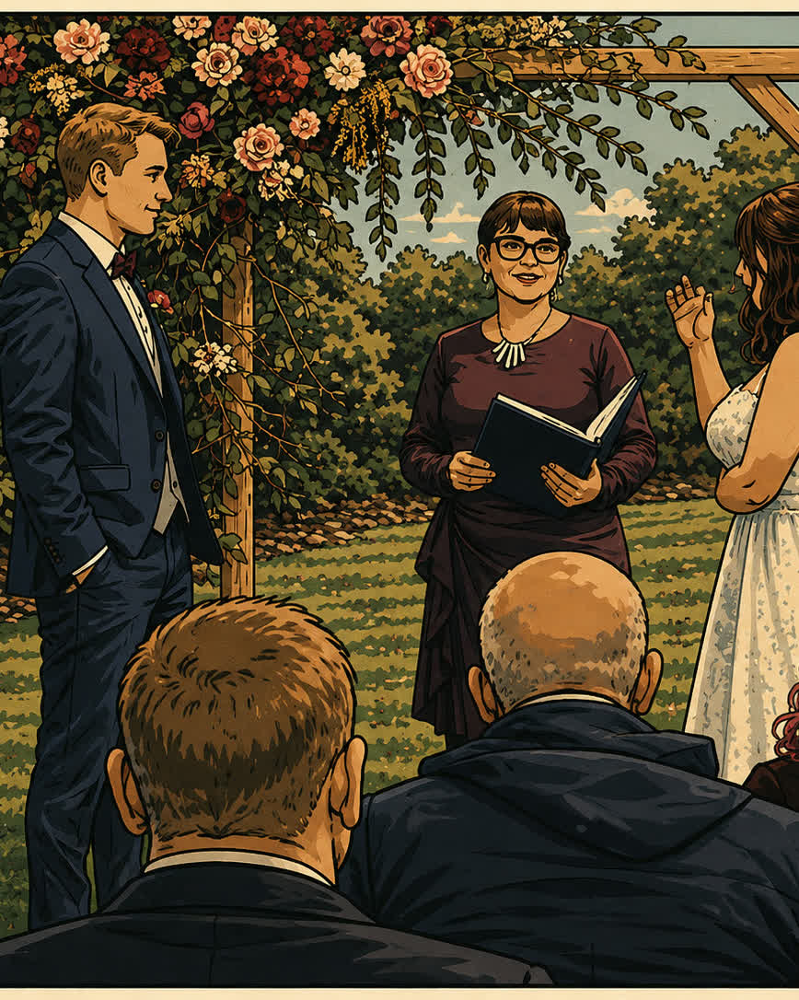

1
Free chat
A 15-minute conversation about what's happening, what you need, and whether we're a good fit.
Gratis gesprek
Een gesprek van 15 minuten over wat er speelt, wat je nodig hebt en of we goed bij elkaar passen.
Life · Death · Ceremony · Community · Connection
I'm Sacha. I walk alongside people at life's biggest moments — ceremonies and celebrations, death and dying, loss and grief. Honest, warm, and always starting with a conversation.
Ik ben Sacha. Ik loop naast mensen tijdens de grote momenten van het leven — ceremonies en vieringen, dood en sterven, verlies en rouw. Eerlijk, warm en altijd beginnend met een gesprek.

Meet SachaOntmoet Sacha
I'm Sacha, the person behind Get Real Connection. My passion is real, honest human connection.
Whether I'm alongside someone dying, guiding a ceremony, or facilitating a workshop, I believe deeply in the courage of showing up fully — for ourselves and each other.
You already have what you need. Sometimes you just need someone to guide you there. I'd be honoured to walk alongside you.
Ik ben Sacha, de persoon achter Get Real Connection. Mijn passie is echte, oprechte menselijke verbinding.
Of ik nu naast iemand sta die sterft, een ceremony begeleid of een workshop faciliteer — ik geloof diep in de moed om er volledig te zijn, voor onszelf en voor elkaar.
Je hebt al wat je nodig hebt. Soms heb je gewoon iemand nodig die je de weg wijst. Ik loop graag naast je.
Life · Ceremony · CelebrationLeven · Ceremony · Viering
Life is a spiral — birth, childhood, adolescence, adulthood, elderhood, death. Along the way are moments of real change, sometimes obvious, sometimes not.
Pausing to witness — and be witnessed — deepens shared experience and clears the way for what comes next. Call it ritual, call it marking life stages, call it attention for the real stuff. This is where the gold is found.
I create bespoke ceremonies and I officiate funerals, memorials, and rites of passage. Big or small, it all starts with a chat.
Het leven is een spiraal — geboorte, kindertijd, adolescentie, volwassenheid, ouderdom, dood. Onderweg zijn er momenten van echte verandering, soms duidelijk, soms niet.
Pauzeren om te getuigen — en getuige te zijn — verdiept de gedeelde ervaring en maakt de weg vrij voor wat komt. Noem het ritueel, noem het het markeren van levensfasen, noem het aandacht voor de echte dingen. Dit is waar het goud wordt gevonden.
Ik creëer maatwerk ceremonies en ik celebreer begrafenissen, herdenkingen en overgangsrituelen. Groot of klein, het begint altijd met een gesprek.
Rites of PassageOvergangsrituelen
A Rite of Passage is the conscious marking of a transition — pausing to witness and honour the moment you move from one chapter of life into the next.
Every Rite of Passage moves through three phases: separation (letting go of what was), transition (the in-between space where transformation happens), and re-integration (stepping into who you are becoming). Woven through it all are ritual, symbolism, and the act of consciously crossing the threshold.
Een overgangsritueel is het bewuste markeren van een overgang — pauzeren om te getuigen en te eren van het moment dat je van het ene levenspoofdstuk naar het volgende gaat.
Elk overgangsritueel doorloopt drie fasen: scheiding (loslaten van wat was), overgang (de tussenruimte waar transformatie plaatsvindt) en reïntegratie (stappen in wie je aan het worden bent). Geweven door dit alles zijn ritueel, symboliek en de daad van het bewust oversteken van de drempel.

Death · Dying · GriefDood · Sterven · Rouw
It really is out of our control. When we bring death into everyday conversation — when we normalise our own demise — something can shift and we can create more joy in life.
I see death as a sacred event, our final rite of passage. I sit with people who fear death — for themselves or someone close — so we can find more acceptance and ease around it together.
I'm not a therapist. I'm a mortal human who has loved and lost. I'm still practising the art of letting go — and I will until the day I die.
Dying isn't only a personal matter. It touches workplaces, schools, and communities. If you want to bring conversations about death into yours, let's talk.
I also host Death Cafe — a space for open, honest conversation about death over tea and cake.
Het is echt buiten onze controle. Wanneer we de dood in alledaagse gesprekken brengen — wanneer we onze eigen dood normaliseren — kan er iets verschuiven en kunnen we meer vreugde in het leven creëren.
Ik zie de dood als een heilige gebeurtenis, ons laatste overgangsritueel. Ik zit bij mensen die de dood vrezen — voor zichzelf of voor iemand dichtbij — zodat we samen meer acceptatie en rust daaromheen kunnen vinden.
Ik ben geen therapeut. Ik ben een sterfelijk mens die heeft liefgehad en verloren. Ik oefen nog steeds de kunst van loslaten — en dat zal ik doen tot de dag dat ik sterf.
Sterven is niet alleen een persoonlijke zaak. Het raakt werkplekken, scholen en gemeenschappen. Als je gesprekken over de dood naar jouw gemeenschap wilt brengen, laten we dan praten.
Ik organiseer ook Death Cafe — een ruimte voor open, eerlijk gesprek over de dood bij thee en taart.
Why I call myself a Deathwalker Waarom ik mezelf een Deathwalker noem
The word doula comes from ancient Greek — it means slave or servant. While that spirit of dedication is beautiful, the word carries an imbalance that doesn't feel right to me.
I don't stand behind you. I don't manage you. I walk beside you.
That's why I prefer Deathwalker — someone walking alongside people, being of service to anyone who needs support around their relationship with death and dying, loss and grief. On your path. At your pace. In your way.
A deathwalker is a guide. Not to take over or have all the answers, but to help you find your own way through one of life's most profound passages. Families and dying people hold more wisdom than they realise — sometimes it just needs space, a steady presence, and someone willing to go there with you.
Birth and death are the bookends of our presence on this planet. When we are born, we step through the portal of birth into life. When we draw close to dying, we can prepare to step through the portal of death — to conclude our life with grace and gratitude.
Listen to Sacha's podcast interview · Watch Zenith Virago's talk
Het woord doula komt uit het Grieks en betekent letterlijk slaaf of dienares. Hoewel die toewijding mooi is, draagt het woord een ongelijkheid in zich die niet klopt voor mij.
Ik sta niet achter je. Ik beheer je niet. Ik loop naast je.
Daarom verkies ik Deathwalker — iemand die met mensen meeloopt, van dienst aan iedereen die steun nodig heeft rondom hun relatie met de dood, het sterven, verlies en rouw. Op jouw pad. Op jouw tempo. Op jouw manier.
Een deathwalker is een gids. Niet om het over te nemen of alle antwoorden te hebben, maar om je te helpen je eigen weg te vinden. Families en stervenden bezitten meer wijsheid dan ze beseffen — soms heeft die wijsheid alleen ruimte nodig, een stabiele aanwezigheid en iemand die bereid is er samen doorheen te gaan.
Geboorte en dood zijn de boekenleggers van ons bestaan. Wanneer we geboren worden, stappen we door het portaal van het leven. Wanneer we de dood naderen, kunnen we ons voorbereiden om door het portaal van de dood te stappen — en ons leven af te sluiten met gratie en dankbaarheid.
Luister naar Sacha's podcast-interview · Bekijk de lezing van Zenith Virago
How it worksHoe het werkt
A 15-minute conversation about what's happening, what you need, and whether we're a good fit.
Een gesprek van 15 minuten over wat er speelt, wat je nodig hebt en of we goed bij elkaar passen.
Together we shape the ceremony, ritual, conversation or support around your people, your values and your situation.
Samen vormen we de ceremony, het ritueel, het gesprek of de ondersteuning rond jouw mensen, waarden en situatie.
We create space to pause, witness, honour, grieve, celebrate, speak, listen or simply be together.
We scheppen ruimte om te pauzeren, te getuigen, te eren, te rouwen, te vieren, te spreken, te luisteren of gewoon samen te zijn.
Where helpful, we reflect on what shifted and what support or next steps might be useful.
Waar nuttig, reflecteren we op wat er veranderd is en welke ondersteuning of volgende stappen zinvol kunnen zijn.
WatchBekijk

About SachaOver Sacha
Sacha Hoogerwerf is the person behind Get Real Connection.
She has trained as a deathwalker, facilitated Death Cafes, officiated funerals and memorials, created bespoke ceremonies, and sat with people in some of their most vulnerable and courageous moments.
Her work is grounded in presence, humour, tenderness and clarity. She is not a therapist. She is a mortal human who has loved and lost — and to her, grief means love.
Every ceremony, every ritual, every moment of support begins the same way: a cup of tea, a good listen, and a real conversation.
Sacha Hoogerwerf is de persoon achter Get Real Connection.
Ze heeft een opleiding gevolgd als deathwalker, Death Cafes gefaciliteerd, begrafenissen en herdenkingen gecelebreerd, maatwerk ceremonies gecreëerd en bij mensen gezeten in sommige van hun meest kwetsbare en moedige momenten.
Haar werk is geworteld in aanwezigheid, humor, tederheid en helderheid. Ze is geen therapeut. Ze is een sterfelijk mens die heeft liefgehad en verloren — en voor haar betekent rouw liefde.
Elke ceremony, elk ritueel, elk moment van ondersteuning begint op dezelfde manier: een kop thee, goed luisteren en een echt gesprek.
In their own wordsIn hun eigen woorden
"Sacha made my 40th birthday celebration unforgettable. She organised a beautiful ceremony for me by the beach — so thoughtful, caring, and above all, so much fun. I highly recommend her if you'd like a special memory for yourself and your loved ones."
Bea Pokor, Nelson, Aotearoa · Bespoke birthday celebrationVerjaardagsceremonie op maat
"Sacha was a joy to work with. She made our celebration of love a relaxed and enjoyable family event — professional on the official side, and warm and personal in the ceremony itself."
Erin Leigh, Wellington, Aotearoa · Marriage officiation & celebrationHuwelijksvoltrekking & viering
"Sacha was a tremendous support when my daughter-in-law was very ill and dying. For our whole family, she offered loving guidance and a steady presence through the hardest of times. She attended day and night — sleeping in the room and changing the ice packs every six hours. Her honesty, integrity, and dignity showed in everything she did. We loved her for it."
Joyce Deane, Nelson · Deathwalker & family supportDeathwalker & familiebegeleiding
"I will always be grateful for Sacha's capacity to support my dad and me when my mum died at home. We were exhausted, and Sacha came in, communicated with the funeral director and nurses, and looked after everything. She helped wash and dress Mum in her favourite clothes, and was the celebrant at the funeral. Her reassuring presence and skill meant the world to us."
David Zeegers, Amsterdam · Death care, family support & funeral celebrantStervenszorg, familiebegeleiding & uitvaartcelebrant
Useful linksHandige links
Start hereBegin hier
No pressure, no script, no wrong reason to reach out. Whether you're in the middle of something big, standing at a threshold you didn't choose, or simply feeling the quiet pull toward something more meaningful — I'd love to hear from you.
Every ceremony, every ritual, every moment of support begins the same way: a cup of tea, a good listen, and a real conversation.
Let's talk.
Geen druk, geen script, geen verkeerde reden om contact op te nemen. Of je nu midden in iets groots zit, staat voor een drempel die je niet hebt gekozen, of gewoon de stille aantrekkingskracht voelt naar iets zinvoller — ik hoor graag van je.
Elke ceremony, elk ritueel, elk moment van ondersteuning begint op dezelfde manier: een kop thee, goed luisteren en een echt gesprek.
Laten we praten.